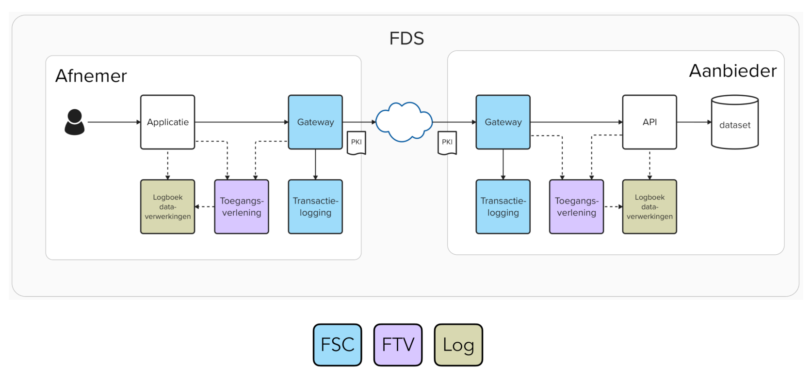

Dit is de koppelvlakspecificatie voor de API waarmee schuldhulporganisaties gegevens beschikbaarstellen aan het CBS.
Dit is een product van het programma DDAS. De API is gebaseerd op het informatie- en uitwisselmodel.
Naast de uitgangspunten en de technische specificatie bevat dit document een beschrijving van de niet-functionele eisen (beschikbaarheid, performance). Ook worden het aanleverprotocol (welke stappen worden doorlopen als gegevens opgehaald worden) en het aansluitprotocol (hoe kan een organisatie deelnemer worden) beschreven. Ten slotte wordt het beheer van de specificatie zelf beschreven.
In de huidige versie staan nog diverse vraagstukken en de keuzes die gemaakt worden, moeten nog worden bevestigd. Het document dient daarom vooral als basis voor de discussie om tot een definitieve specificatie te komen, en er kunnen geen rechten aan dit document ontleend worden.
Status van dit document
Dit document is nog 'In Ontwikkeling'.
1. Uitgangpunten
1.1 Kaders
Het koppelvlak moet voldoen aan de volgende wetten, afspraken en standaarden:
Dit profiel is het minst complexe profiel voor API's en past het beste bij een stelsel waar veel partijen aan deelnemen en in eigen tempo kunnen aansluiten.
Implicaties
Alle leverende deelnemers dienen een API conform het REST profiel beschikbaar te stellen.
Omdat het Digikoppeling REST profiel nog geen keuze heeft gemaakt voor signing en encryptie, moet hier expliciet een keuze in gemaakt worden.
Omdat het REST profiel van Digikopeling (nog) geen standaard voor encryptie heeft vastgesteld, moet er eentje gekozen worden.
De "payload encryption" is als standaard voorgesteld door het Kennisplatform API's.
De "payload encryption" standaard is gebaseerd op JWE, de internationale standaard voor encryptie die breed toegepast wordt.
Implicaties
nog uitwerken
Federatieve Services Connectiviteit voor de architectuur - FSC
Rationale
Deze architectuur is de standaard voor 1-op-1 koppelingen voor gemeenten. Hoewel de standaard nog niet heel breed gebruikt wordt, is dit wel de standaard voor de toekomst.
Er bestaat een referentie implementatie die het ontwikkelen van de API sterk vereenvoudigd. Verder is er bij VNG Realisatie (waar de standaard is ontwikkeld) kennis die gebruikt kan worden.
Implicaties
Alle deelnemers dienen de FSC componenten te installeren en in te richten. Er bestaat een algemene referentie implementatie, maar om de inrichting verder te vereenvoudigen is het aan te raden om een specifieke referentie implementatie aan te bieden voor DDAS.
Het informatiemodel en het uitwisselmodel voor DDAS zijn in het JSON formaat ontwikkeld. Het is het eenvoudigst als de berichten dan ook in JSON formaat uitgewisseld worden.
JSON is goed leesbaar voor mensen, maar toch voldoende klein om ook grotere berichten uit te kunnen wisselen.
Vrijwel alle moderne informatiesystemen kunnen goed overweg met JSON berichten, wat de inrichting en het beheer vereenvoudigd.
Implicaties
De gegevens moeten in JSON formaat uitgewisseld worden.
Het Diginetwerk is een gesloten netwerk waar alleen overheidsorganisaties toegang toe hebben. Dit beperkt de risico's van onbevoegde toegang tot de gegevens enorm.
Implicaties
Alle deelnemers moeten toegang tot het Diginetwerk hebben of krijgen. Dit vereist toegang via een koppelnetwerkaanbieder.
Voor identicatie, authenticatie, signen en encryptie is een middel nodig dat door het stelsel vertrouwd wordt. PKIoverheid certificaten worden door de Nederlandse overheid uitgegeven, die daarmee de "Trust Anchor" voor DDAS wordt.
PKIoverheid certificaten worden door Logius (namens de rijksoverheid) uitgegeven en beheerd. Er is daarom geen organisatie nodig om certificaten voor het DDAS stelsel te beheren.
PKIoverheid certificaten kunnen voor veel diensten binnen de overheid gebruikt worden. De investering is daarom niet alleen voor DDAS, maar ook voor eventuele andere diensten die de deelnemer afneemt.
Implicaties
Alle deelnemers moeten een PKIoverheid certificaat hebben of krijgen. NB: Het is niet altijd mogelijk om een PKIoverheid certificaat dat al in gebruik is, te hergebruiken.
Beveiligingsniveau BBN2 (NB: DPIA is nog in wording)
Rationale
In de DPIA wordt dit vereist.
Implicaties
De BIO maatregelen moeten gericht zijn op het behalen van het beveiligingsniveau BBN2.
2. Overzicht API stelsel
In de onderstaande figuur staan de componenten geschetst die in het API berichtenverkeer een rol spelen.

In deze figuur betekent:
FDS: Federatief Datastelsel (hier niet relevant, maar dit schema is daaraan ontleend en geeft aan dat DDAS past in een Federatief Datastelsel)
Afnemer: CBS
Aanbieder: de schuldhulpverlenende organisatie of de gegevensleverancier hiervan
FTV: Federatieve Toegangsverlening - een standaard voor het inrichten en beheren van gecontroleerde toegang tot gegevensdiensten in een stelsel
Log: Logging t.b.v. monitoring en verantwoording
Deze specificatie richt zich primair op de beschrijving van de API (rechtsboven in de figuur bij de aanbieder van gegevens), maar ook de andere componenten worden benoemd.
Bent u enkele geïnteresseerd in de OpenAPI specificatie van de API? Deze staat onder het kopje "Berichten".
3. Transportlaag
Hoe ziet de technische uitwisseling van berichten eruit.
Dubbelzijdig TLS. NB: Dit vereist een certificaat dat door alle betrokken partijen vertrouwd wordt (zie ook "Vragen")
Berichten lopen via FSC-componenten "outway gateway" van de afnemer (CBS) en "inway gateway" van de gegevensleverancier met de API
De "directory" van FSC waarin alle endpoints van de gegevensleveranciers staan wordt beheerd door CBS
Vragen:
Gebruik van Diginetwerk? Kunnen alle organisaties die gegevens gaan leveren hierop aansluiten? Wordt waarschijnlijk niet mogelijk... Dan via “open” internet: vereist mogelijk extra maatregelen, zoals versleuteling van de gegevens.
Gebruik van PKIo certificaten voor authenticatie op basis van het Nederlandse profiel van OAuth? Het is de vraag of alle partijen een PKIo certificaat mogen aanvragen. Als dit niet mogelijk is, moet een “trust anchor” gevonden worden: de autoriteit die certificaten kan uitgeven en beheren, en die door alle betrokken partijen vertrouwd wordt.
4. Identificatie, Authenticatie en Autorisatie
Het bijhouden van de deelnemers in het DDAS stelsel gebeurt door CBS in een directory die door FSC gebruikt wordt. Alle deelnemers gebruiken deze directory bij het uitwisselen van berichten.
Hoe worden de schuldhulpverleners (gegevensleveranciers) geïdentificeerd? (o.b.v. (sub)OIN?) Als niet alle betrokken partijen een (sub)OIN kunnen krijgen, moet een systematiek gevonden worden om alle partijen uniek te kunnen identificeren.
Hoe worden systemen geauthenticeerd? (obv PKIo certificaten? Als dat niet kan: wie wordt de “Trust Anchor” – de autoriteit die door alle partijen vertrouwd wordt?)
Autorisatie lijkt niet heel spannend: er zal waarschijnlijk maar één service komen met een vaste set gegevens, waar maar één partij (CBS) toegang toe zal krijgen.
Als fijnmaziger autorisatie nodig is, dan bestaat er een voorkeur voor PBAC (Policy Base Authorisation Control). De autorisatie wordt dan bepaald op basis van beleidsregels, zoals “organisatie X krijgt toegang tot gegeven G als de organisatie overeenkomst O getekend heeft en het gegeven is vrijgegeven door autoriteit A”. Dan is de vraag wie deze beleidsregels vaststelt en wie ze beheert.
5. Signing en Versleuteling
5.1 Signeren (Signing)
NB: De Digikoppeling standaard voor REST-API heeft (nog) geen standaard voor signing en encryptie vastgesteld. Vanuit het Kennisplatform API's zijn wel voorstellen gedaan om hier een standaard voor te kiezen. Er zijn al standaarden uitgewerkt die op basis van JWS en JWE invulling hieraan geven - deze standaarden worden ook hier voorgesteld.
Voorstel: Signing op basis van ADR-HTTP Message and payload signing with JAdES.
Het signeren van het bericht gebeurt met de privé sleutel van de verzender van het bericht, zodat het de controle met de publieke sleutel van de verzender kan gebeuren en in principe iedereen de handtekening kan controleren.
5.2 Versleuteling (Encryptie)
Is versleuteling nodig? Er lijken geen routeervoorzieningen nodig te zijn waar berichten mogelijk gelezen kunnen worden, en als het kan gaan de berichten over het Diginetwerk van de overheid. Maar het is nog niet bekend of dit inderdaad kan en om voorbereid te zijn op eventuele toepassingen met routeervoorzieningen, is versleuteling nog een discussiepunt.
Voorstel: Versleuteling op basis van ADR-HTTP Payload encryption.
De versleuteling gebeurt met de publieke sleutel van de ontvanger (in dit geval CBS), zodat alleen de ontvanger het bericht kan ontsleutelen.
6. Berichten
De technische beschrijving van de API is het volgende OAS3-bestand beschreven.
Hieronder worden de berichten die in het OAS-bestand technisch beschreven zijn, toegelicht.
6.1 Encoding
Conform de uitwisselspecificatie die voor de bestandsuitwisseling gebruikt wordt, is de encoding van de berichten UTF-8.
6.2 Vraagbericht (request)
Dit is het vraagbericht zoals dat door CBS naar de schuldhulpverlener gestuurd wordt. Alleen een POST request: alleen opvragen gegevens, geen mutaties. Bij GET zitten de parameters in de URL, waardoor mogelijk cache gegevens gebruikt worden, als de parameters niet wijzigen - daarom liever een POST.
Voorstel voor parameters die meegestuurd kunnen worden (allemaal optioneel):
Startdatum (default leeg - deelnemer bepaalt dan startdatum)
Einddatum (default leeg - deelnemer bepaalt dan einddatum)
Gemeente (default alle – alleen relevant als over meer dan 1 gemeente gegevens aangeleverd worden)
Het bericht wordt met JAdES ondertekend met de private sleutel van de verzender van het vraagbericht.
6.3 Antwoordbericht (response)
Dit is het antwoordbericht van de schuldhulpverlener met de gewenste gegevens in JSON formaat.
Ook dit bericht wordt ondertekend met JAdES met gebruik van de eigen private sleutel.
Als versleutelen nodig is, wordt het bericht versleuteld conform ADR-HTTP Payload encryption met de publieke sleutel van de afnemer waar het antwoordbericht naartoe gaat (in dit geval altijd CBS). Of dit noodzakelijk is, is nog een punt van dicussie.
Beide handelingen zijn nu opgenomen in de OAS3.1 specificatie.
200: bericht goed verwerkt (met versleutelde en gesigneerde payload)
Foutberichten moeten nog bepaald worden - nu zijn 400 (ongeldig verzoek) en 401 (Ongeautoriseerd, OAuth2-token vereist) opgenomen
7. Niet functionele eisen
7.1 Beschikbaarheid
Niet kritische toepassing: geen hoge beschikbaarheid vereist.
Afstemmen met CBS: wanneer willen zij gegevens verzamelen? Dan zou de beschikbaarheid wat hoger moeten zijn. BV: tijdens kantooruren
7.2 Performance
Geen afhankelijkheden in het primaire proces: geen hoge performance vereist.
Wordt gebruik van cache toegestaan (volgens mij moet dat kunnen)? Onder welke voorwaarden?
7.3 Logging en Monitoring
Verantwoordelijkheid voor monitoring ligt bij partij die verantwoording hierover moet afleggen. Omdat er persoonsgegevens verwerkt worden, moet in elk geval rekening gehouden worden met de AVG. Daarom moet gelogd worden welke BSN's met wie uitgewisseld worden.
Welke verantwoording verwacht het programma of SZW?
Voor gemeenten (suggestie):
Aantal bevragingen naar datum en afzender (altijd CBS?)
Aantal en soort foute bevragingen
Aantal en soort meegestuurde parameters
Uitgewisselde BSN's met afnemer (altijd CBS?), zodat een burger inzicht kan krijgen in wie wanneer zijn gegevens heeft opgevraagd
Voor CBS:
Aantal bevragingen naar datum en schuldhulpverlener
Aantal en soort (evt foutcodes) responses
8. Aanleverprotocol
Stappen bij het aanleveren van gegevens:
CBS roept via FSC de API van de gegevensleverancier aan (eventueel met parameters) met requestbericht dat gesigneerd is met privé sleutel van CBS
De gegevensleverancier controleert de signatuur met de publieke sleutel van CBS
Indien OK, dan stuurt de gegevensleverancier de gegevens in het responsebericht dat gesigneerd is met eigen privé sleutel en versleuteld is met publieke sleutel CBS
CBS ontsleutelt het bericht met eigen privé sleutel en controleert response technisch (signing, berichtformaat, viruscontrole)
CBS controleert response functioneel (verplichte velden, vreemde waarden, etc.)
CBS stuurt een verwerkingsverslag naar de gegevensleverancier [nog ter discussie hoe dit het beste kan]
Indien OK, dan worden de gegevens ingelezen in de database
CBS loopt alle gerapporteerde trajecten af en combineert trajecten van dezelfde BSN tot één “traject”
[nog ter discussie:
Bij het combineren wordt de volledigheid en kwaliteit van de gegevens gecontroleerd – op basis daarvan krijgt het traject een "betrouwbaarheidsindicator""
]
CBS genereert de gewenste rapporten
NB: Als er bij deze stappen algoritmen gebruikt worden, moeten deze voldoen aan de Europese AI-verordening (definitieve tekst nog niet gevonden) en aangemeld worden bij het Algoritmeregister van de Nederlandse overheid.
9. Aansluitprotocol
Iedere schuldhulpverleningsorganisatie of gemeente (hierna: "deelnemer") die gegevens beschikbaar gaat stellen aan CBS, moet het aansluitprotocol doorlopen. Dit protocol valt onder verantwoordelijkheid van het programma DDAS. Voor vragen hierover kan altijd contact opgenomen worden met [contactadres].
Het protocol kan aangepast worden als hiervoor aanleiding is. Na aanpassingen wordt de meest recente versie met versienummer en versiedatum gepubliceerd op [documentatiewebsite].
De stappen die de deelnemer moet doorlopen, zijn:
De deelnemer meldt zich bij de stelselbeheerder (CBS of DDAS?) via het aanmeldformulier [waar staat dit? wie beheert dit?], waarin in elk geval het volgende ingevuld:
Naam van de deelnemer + contactgegevens
Naam van de gegevensleverancier + contactgegevens
Endpoint waar de productiegegevens beschikbaar komen
Endpoint waar de testgegevens beschikbaar komen
Akkoord met de aansluitvoorwaarden, waaronder de verwerkersovereenkomst met CBS
Eventuele verzoeken om de aansluiting tot stand te krijgen, zoals een gewenste publicatiedatum, specifieke testdata of specifieke beschikbaarheid
Indien PKIo certificaten niet mogelijk zijn: de stelselbeheerder (DDAS of CBS?) genereert een certificaat voor de TLS verbinding, signing en encryptie, en levert deze aan de deelnemer.
De deelnemer richt in de testomgeving de API, conform de AOS documentatie [yaml-bestand, nog toe te voegen] in. Voor de installatie van FSC komt een handleiding en een referentie implementatie beschikbaar.
De deelnemer voert CBS op in de management module van FSC, om toegang te verlenen.
CBS voert enkele bevragingen uit in de testomgeving en beoordeelt de kwaliteit van de gegevens. Op basis van de bevindingen wordt de API aangepast.
Indien er geen blokkerende bevindingen zijn, krijgt de deelnemer vrijgave van de stelselbeheer (DDAS of CBS?) en wordt de API in de productieomgeving ingericht en beschikbaar gesteld.
CBS voert de deelnemer op in de management module van FSC, zodat de API bevraagd wordt bij het ophalen van alle gegevens.
Ten behoeve van de testen stelt DDAS een set testgegevens beschikbaar [wie maakt deze set? waar komt dit te staan?].
Voor ondersteuning bij de aansluiting is een referentie implementatie en documentatie beschikbaar [waar?] en kan contact opgenomen worden met [contactadres]. Als er bij de aansluiting bevindingen zijn, die niet door de deelnemer opgelost kunnen worden, kan een wijzigingsverzoek ingediend worden.
10. Beheer van de specificatie
De koppelvlakspecificatie is onderhevig aan wijzigingen: de technologie ontwikkelt zich, er zijn mogelijk andere gegevens nodig, de samenwerking tussen de betrokken partijen kan wijzigen, etc. Om deze wijzigingen op een betrouwbare en juiste manier te verwerken in de specificatie, is een wijzigingsproces ingericht. Dit wijzigingsproces valt onder verantwoordelijkheid van de stuurgroep DDAS en wordt uitgevoerd door het programma DDAS, zolang het programma DDAS actief is. Daarna wordt het overgedragen aan een nog aan te wijzen organisatie. Voor het beoordelen van wijzigingsverzoeken wordt een beheeroverleg samengesteld, met afgevaardigden van de betrokken partijen, onder voorzitterschap van het programma DDAS. Dit beheeroverleg komt periodiek bijeen om wijzigingsverzoeken te beoordelen en eventueel verder uit te werken.
Het streven is om maximaal eenmaal per jaar een nieuw release van de koppelvlakspecificatie uit te brengen.
10.1 Indienen wijzigingsverzoek
Wijzigingsverzoeken worden verzameld via [nog in te vullen]. Alle betrokken partijen mogen wijzigingsverzoeken indienen. Er is geen template voor het indienen van een wijzigingsverzoek, maar het verzoek moet in elk geval de volgende informatie bevatten:
Indiener (inclusief contactgegevens)
Datum indienen
Beschrijving gewenste wijziging (bondig, maar voldoende specifiek om in te kunnen schatten wat de impact is)
Onderbouwing/ aanleiding gewenste wijziging
Prioriteit volgens de indiener (hoe snel moet de wijziging doorgevoerd worden)
Als het aantal wijzigingsverzoeken groot wordt of de afhandeling daarvan complex, dan wordt een systeem gebruikt om een en ander in te administreren.
Dit systeem moet zo openbaar mogelijk zijn, om zo transparant mogelijk te zijn over de afhandeling van verzoeken en om te voorkomen dat dezelfde wijzigingsverzoeken meerdere malen ingediend worden.
10.2 Afhandelen wijzigingsverzoek
Het wijzigingsverzoek wordt door het programma DDAS geanalyseerd, waarbij vastgesteld wordt welke onderdelen van de specificatie geraakt worden en wat de geschatte impact is op de specificatie, de techniek, de processen en de betrokken partijen. Tevens wordt ingeschat wat de randvoorwaarden, kosten en doorlooptijd van de gewenste wijziging zouden zijn. Dit leidt tot een voorstel voor de verdere afhandeling: of, hoe en wanneer dit wijzigingsverzoek doorgevoerd wordt.
Het wijzigingsverzoek met de analyse van het programma DDAS worden besproken in het (nog in te richten) beheeroverleg DDAS. Als alle betrokken partijen akkoord gaan met de voorgestelde afhandeling, wordt deze afhandeling gevolgd (d.w.z. inplannen voor een release, via noodprocedure eerder doorvoeren, of afwijzen van het verzoek).
10.3 Releaseproces
Wijzigingen die doorgevoerd moeten worden, worden zoveel mogelijk via een release in productie gebracht. Het streven is om maximaal eenmaal per jaar een release door te voeren. De stappen die hiervoor doorlopen worden zijn:
Vaststellen scope van de release door de stuurgroep DDAS, op basis van advies van beheeroverleg [6 maanden voor productiedatum]
Publiceren aangepaste specificatie door programma DDAS [5 maanden voor productiedatum]
Doorvoeren noodzakelijke wijzigingen in de testomgeving door deelnemers (gegevensleveranciers en CBS) [tot 1 maand voor productiedatum]
Testen nieuwe release in testomgeving [in laatste maand voor productiedatum]
Livegang nieuwe release
10.4 Releasenummering
Ieder release wordt aangeduid met een releasenummer. Deze krijgt de vorm X.Y, waarbij X het "major" nummer is en Y het "minor" nummer. Voor testreleases kan een derde nummer toegevoegd worden; het zogenaamde "patch" nummer. In de productieomgeving wordt geen patch nummer gebruikt.
Als een release via het reguliere releaseproces naar productie gaat, dan krijgt deze een nieuw major nummer en het minor nummer 0 (bv. "1.0"). Als er via de noodprocedure een release doorgevoerd wordt, dan blijft het major nummer hetzelfde, maar wordt het minor nummer opgehoogd (bv. "1.1").
10.5 Vrijgaveprocedure en afwijkingsverzoeken
Er is geen "vrijgave" van deelnemers voor een release nodig. Als de specificatie complexer wordt kan de stuurgroep DDAS besluiten om een vrijgaveprocedure in te richten. De deelnemer moet dan aan de hand van een set testscenario's aantonen te voldoen aan de nieuwe specificaties. Als dit succesvol is, dan krijgt de deelnemer vrijgave voor de nieuwe release. Als dit niet succesvol is, dan kan de deelnemer een afwijkingsverzoek indienen bij het programma DDAS en toch gegevens blijven aanbieden. Een afwijkingsverzoek wordt alleen geaccepteerd als dit de rapporten van CBS niet compromitteert. In het afwijkingsverzoek wordt altijd aangegeven hoe lang de afwijking geldig mag blijven.
10.6 Noodprocedure
Het kan gebeuren dat een wijziging niet kan wachten op een gepland release, maar sneller doorgevoerd moet worden. De stuurgoep DDAS kan dan op advies van het beheeroverleg, een noodprocedure aanroepen.
Het beheeroverleg adviseert de stuurgroep welke stappen genomen moeten worden en in welk tempo deze doorlopen moeten worden. Als de stuurgroep hiermee akkoord gaat, voert het programma DDAS de regie op de uitvoering van de stappen.
De release die hiermee ontstaat krijgt geen nieuw "major" versienummer, maar een nieuw "minor" nummer (zie ook "releasenummering").
10.7 Escalatie
Als de partijen het niet eens worden, wordt het verzoek geëscaleerd naar de stuurgroep DDAS. Als het behandelen van het verzoek niet kan wachten tot het eerstvolgende overleg van de stuurgroep, worden de stuurgroepleden schriftelijk om hun oordeel gevraagd.